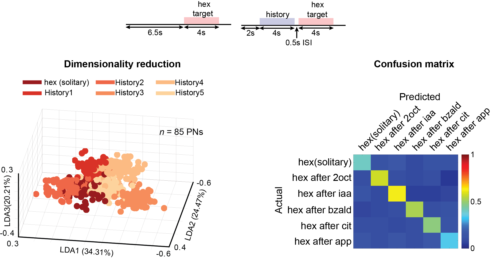
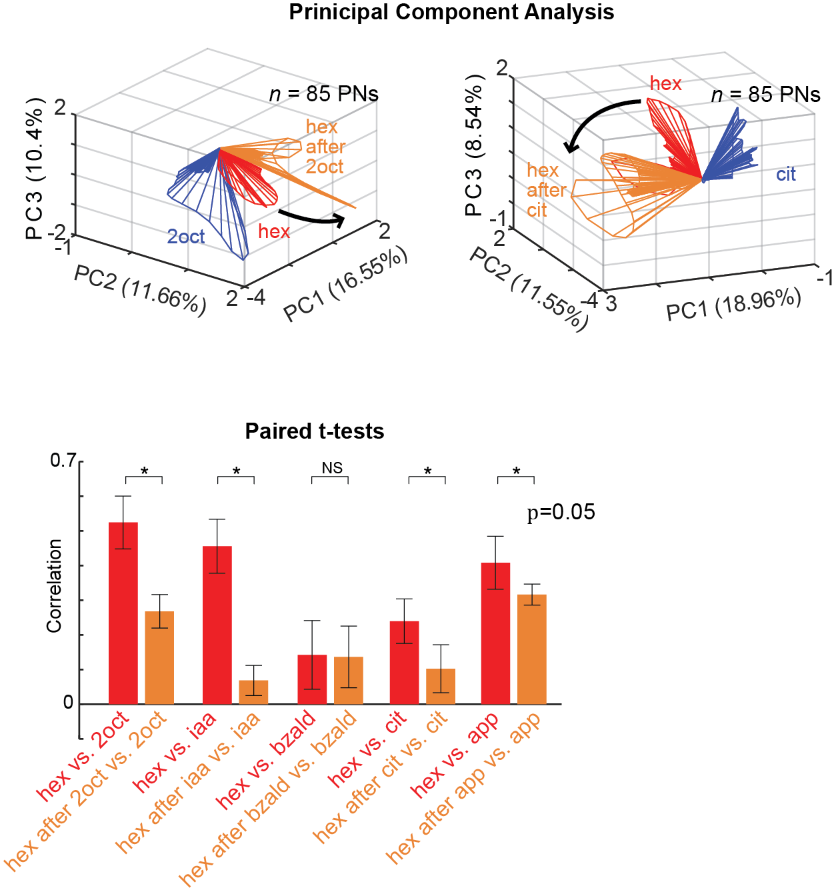
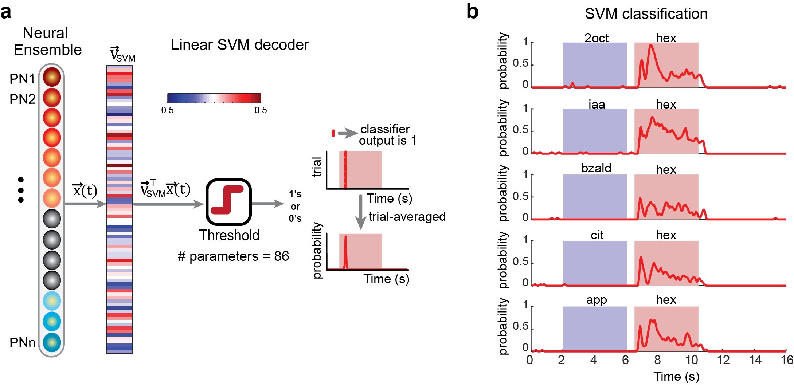

Adaptation of Neural Responses

To study the how neural responses adapt, I first visualized neural data for the stimulus (odor stimulus- hexanol) by transforming 85-dimensional
neural data to 3-dimensions using dimensionality reduction (Linear discriminant analysis). This visualation suggests that neural data is dynamically encoding the same
stimulus based on its history. I confirmed this hypothesis by calculating a confusion matrix. Classification was performed by finding the nearest-centroid.
Centroids of each cluster were found using 90% of data and the remaining 10% was used for testing. Final classification results were averaged across 10 leave-one-out predictions.
Dynamic Contrast enhancement

To study how the adaptation of neural response is dependent on stimulus history, I performed principal component analysis. 85-d neural data was projected onto
3 prinicipal axes that capture maximum variance. Visualizations on the top show that the stimulus history alters the population neural response to enhance the
unique features of the stimulus representation (contrast enhancement). Paired t-tests also confirm that contrast enhancement results in significant adapation of
neural responses.
Decoding stimulus identity from neural data

An classifier robustly decoded the presence of target stimulus (hex) irrespective of stimulus history. Using this result, I proposed a
decoder that can not only provide robust predictions but match with the behavior results.
More information can be found from my paper titled
"Dynamic Contrast Enhanacement and Flexible Odor Codes" Nature Communications, 2018.